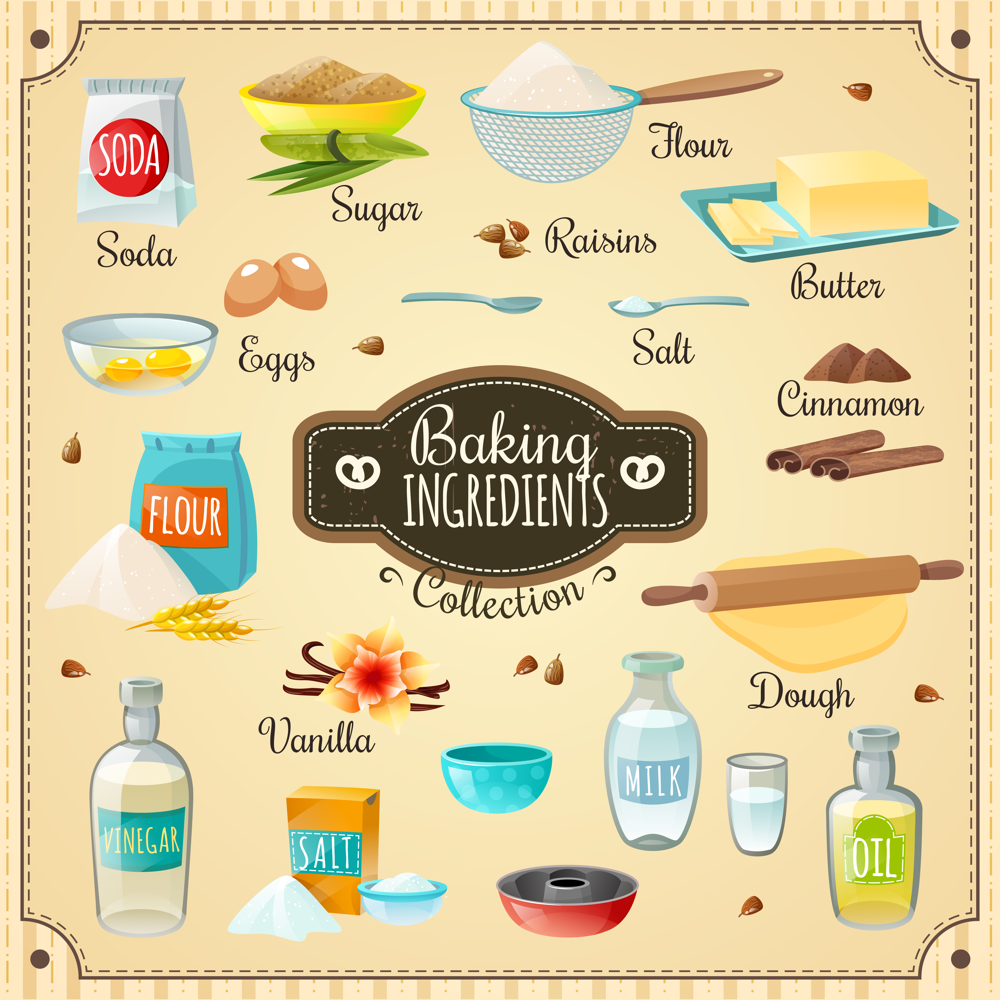

The Best Pancakes Ever

Ingredients
- 10 ounces flour
- 3 Tbsp sugar
- 4 tsp baking powder
- 1/2 tsp baking soda
- 1 tsp salt
- 2 large eggs
- 1/4 vegetable oil, and extra for the pan
- 1 1/2 cups whole milk
- 1/2 tsp vanilla extract (optional)
- Butter and syrup for serving
